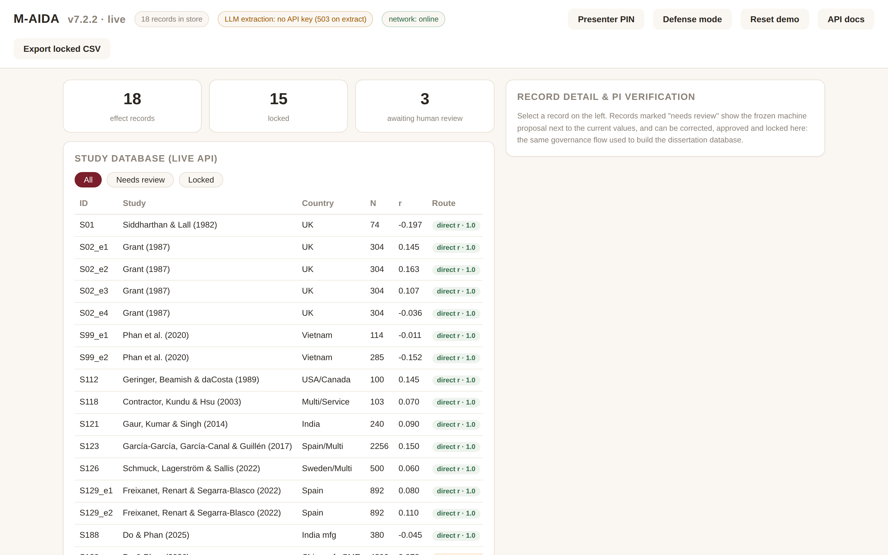

Bản demo học thuật
Bản công khai trên GitHub Pages: giới thiệu phương pháp, dữ liệu tổng hợp, và cho thử quy trình ngay trong trình duyệt.
Đây là bản trình diễn có kiểm soát của quy trình M-AIDA đã dùng cho nghiên cứu P6. Máy đọc bằng chứng thống kê và đề xuất số liệu; nhà nghiên cứu đối chiếu, duyệt, khóa bất biến rồi xuất dữ liệu để tái lập. Backend FastAPI chạy thật trên máy của bạn, không phản hồi nào là giả lập.
Mỗi phiên bản phục vụ một mục đích. Hạ tầng thương mại mới ở giai đoạn thử nghiệm, nên trang này không giới thiệu nó như một dịch vụ đã hoàn thiện.
Bản công khai trên GitHub Pages: giới thiệu phương pháp, dữ liệu tổng hợp, và cho thử quy trình ngay trong trình duyệt.
Ứng dụng chạy trên máy: có mã PIN cho người trình bày, lưu trạng thái, nút nạp lại dữ liệu mẫu, API thật, và đủ ba bước kiểm chứng, khóa, xuất dữ liệu.
Hướng thương mại hóa, với các gói cho cá nhân, nhóm nghiên cứu và tổ chức. Hiện chưa cấp phép thương mại vì quyền tài sản chưa xác lập.
M-AIDA là công cụ chuẩn bị dữ liệu cho P6, không phải bằng chứng thay cho P6. Mẫu đánh giá độc lập gồm 30 đến 50 bài, khóa trước khi chạy, và trải đủ ba đường lấy hệ số: r báo cáo trực tiếp, quy đổi t sang r, quy đổi beta sang r.
Kho mã đã có đủ: mẫu chuẩn vàng do hai người mã hóa độc lập, và mã tính precision, recall, F1, sai số của r, số lần phải sửa, xuất xứ và thời gian xử lý.
Khung chọn mẫu đã lập, phân tầng theo hai biến mã hóa của P6 (DPL × ICRV), nhưng chưa khóa. Còn phải xác nhận đủ toàn văn và loại mọi bài từng dùng để chỉnh M-AIDA.
Chưa công bố số liệu về độ chính xác hay thời gian tiết kiệm. Mẫu đánh giá không xét khâu sàng lọc, rủi ro sai lệch (risk of bias), mô hình phân tích tổng hợp, hay cách diễn giải kết quả P6.

Kịch bản trình diễn có sẵn đường lui khi mất mạng hoặc nhà cung cấp mô hình ngôn ngữ ngừng phục vụ.
Lọc bản ghi đã khóa và bản ghi chờ duyệt trong mẫu P6 đã kiểm chứng.
Đặt đề xuất của máy cạnh giá trị hiện hành và số liệu trong bài gốc.
Chủ nhiệm nghiên cứu ghi chú và duyệt, rồi cho hội đồng thấy API từ chối sửa bản ghi đã khóa.
Xuất CSV chỉ gồm bản ghi đã khóa, rồi mở tài liệu API (OpenAPI).
Windows có tệp khởi chạy, bấm một lần là xong. macOS và Linux dùng script đi kèm.